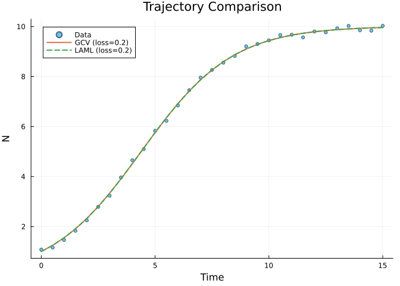
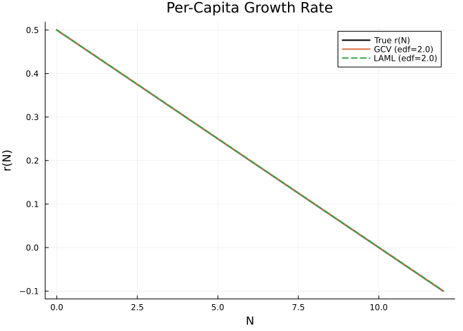
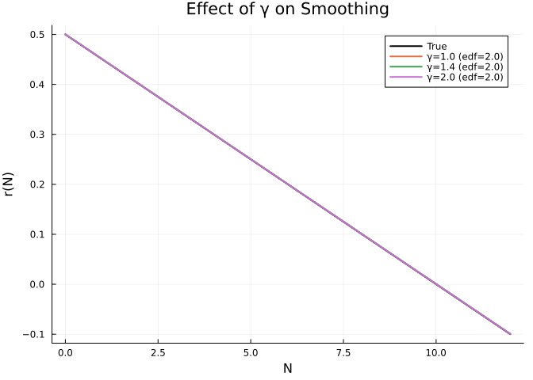
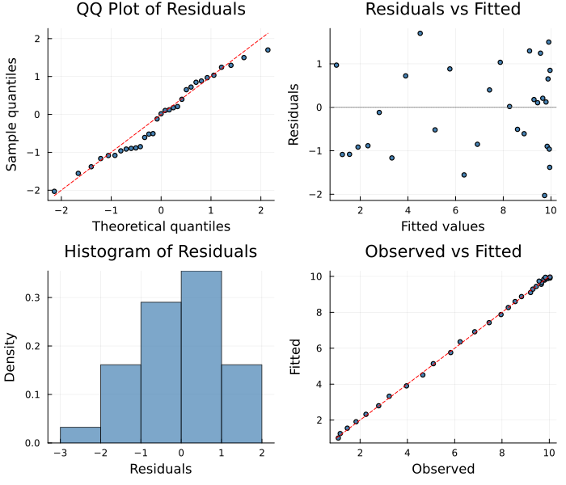

GCV Smoothing Parameter Selection
Overview
The GCVSolver uses Generalized Cross-Validation (GCV) for automatic smoothing parameter selection — a simpler alternative to LAML (Laplace Approximate Marginal Likelihood). While LAML uses a Laplace approximation to the marginal likelihood with Fellner-Schall updates, GCV minimizes a leave-one-out cross-validation score:
\[\text{GCV}(\lambda) = \frac{n \| W^{1/2}(z - J\hat\beta) \|^2}{(n - \gamma \cdot \text{tr}(A))^2}\]
where $A = J(J'WJ + S^\lambda)^{-1}J'W$ is the hat matrix and $\gamma \geq 1$ is an inflation factor that guards against under-smoothing (default 1.4).
using PartiallySpecifiedModels
using OrdinaryDiffEq
using Plots
using Random
Random.seed!(42)TaskLocalRNG()Logistic Growth with Unknown Per-Capita Rate
We model logistic growth $dN/dt = r(N) \cdot N$ where $r(N) = 0.5(1 - N/10)$ is unknown.
r_true(N) = 0.5 * (1.0 - N / 10.0)
function logistic!(du, u, p, t)
N = u[1]
du[1] = p.r(N) * N
end
sol_true = solve(ODEProblem(logistic!, [1.0], (0.0, 15.0), (; r=r_true)),
Tsit5(); saveat=0.5)
t_data = collect(sol_true.t)
data_N = [sol_true.u[i][1] + 0.1 * randn() for i in 1:length(t_data)]
data_matrix = reshape(max.(data_N, 0.01), :, 1)31×1 Matrix{Float64}:
1.0788355601604291
1.1605772282016233
1.4609018803046872
1.830964168555268
2.2494751109754154
2.787177904975914
3.232988782145511
3.9633895011880202
4.652430282861129
5.0964616704520465
⋮
9.674117688772498
9.568487749761156
9.803623047868273
9.768192642939432
9.931372584493301
10.029457191674403
9.852147135390531
9.835900079757396
10.031178231752104GCV vs LAML Comparison
uf = BSplineApproximator(:r, (0.0, 12.0), 8; initial=x -> 0.3)
prob = PSMProblem(logistic!, [1.0], (0.0, 15.0), [uf];
data_times=t_data, data_values=Float64.(data_matrix),
obs_to_state=[1], known_params=NamedTuple())
sol_gcv = solve(prob, GCVSolver(maxiters=100, gamma=1.4, verbose=false))
sol_laml = solve(prob, LAML(maxiters=100, verbose=false))PSMSolution((r = [0.500356288848402, 0.4146797434317218, 0.32900319702274944, 0.2433266472218414, 0.15765009323976995, 0.07197353382016655, -0.013703029761921904, -0.09937959378737699]), 0.09988839495633178, 0.19977686959359256, 1.999998908454228, [404936.18616163963], [1.0; 1.2487974839874734; … ; 9.948195075625303; 9.962145007763066;;], [1.0788355601604291; 1.1605772282016233; … ; 9.835900079757396; 10.031178231752104;;], [0.0, 0.5, 1.0, 1.5, 2.0, 2.5, 3.0, 3.5, 4.0, 4.5 … 10.5, 11.0, 11.5, 12.0, 12.5, 13.0, 13.5, 14.0, 14.5, 15.0], Dict{Symbol, Any}(:r => DataInterpolations.CubicSpline{Vector{Float64}, Vector{Float64}, Vector{Float64}, Vector{Float64}, Vector{Float64}, Vector{Float64}, Float64}([0.500356288848402, 0.4146797434317218, 0.32900319702274944, 0.2433266472218414, 0.15765009323976995, 0.07197353382016655, -0.013703029761921904, -0.09937959378737699], [0.0, 1.7142857142857142, 3.4285714285714284, 5.142857142857143, 6.857142857142857, 8.571428571428571, 10.285714285714286, 12.0], Float64[], DataInterpolations.CubicSplineParameterCache{Vector{Float64}}(Float64[], Float64[]), [0.0, 1.7142857142857142, 1.7142857142857142, 1.7142857142857149, 1.7142857142857135, 1.7142857142857144, 1.7142857142857153, 1.7142857142857135], [0.0, -1.640221463856948e-10, -1.3698412920191519e-9, -1.2818146113380703e-9, -2.039442397839095e-9, -1.6620433959956344e-9, 1.8920909157298768e-10, 0.0], DataInterpolations.ExtrapolationType.Linear, DataInterpolations.ExtrapolationType.Linear, FindFirstFunctions.Guesser{Vector{Float64}}([0.0, 1.7142857142857142, 3.4285714285714284, 5.142857142857143, 6.857142857142857, 8.571428571428571, 10.285714285714286, 12.0], Base.RefValue{Int64}(1), true), false, false)), (V_beta = [0.0009747210561275305 0.000753440290309277 … -0.0003528450938473971 -0.0005740888714866447; 0.000753440290309277 0.0005875701302174282 … -0.00024173930415328663 -0.0004075941946327348; … ; -0.0003528450938473971 -0.00024173930415328663 … 0.0003138056045044166 0.0004249200675710266; -0.0005740888714866447 -0.0004075941946327348 … 0.0004249200675710266 0.0005914424978595346], sigma2 = 0.006888857312899638, converged = true, iterations = 10, reason = :converged_tol, laml_failures = 0, criterion = :working, laml = 65.53389937960462, stationarity = 8.785526074047331e-7, smoothing_advanced = true))Trajectory Fit
p1 = plot(t_data, data_matrix[:, 1], seriestype=:scatter, label="Data",
xlabel="Time", ylabel="N", title="Trajectory Comparison", ms=3, alpha=0.6)
plot!(p1, t_data, sol_gcv.fitted_values[:, 1], label="GCV (loss=$(round(sol_gcv.data_loss, digits=2)))", lw=2)
plot!(p1, t_data, sol_laml.fitted_values[:, 1], label="LAML (loss=$(round(sol_laml.data_loss, digits=2)))", lw=2, ls=:dash)
p1
Recovered Unknown Function
r_gcv = sol_gcv.unknown_functions[:r]
r_laml = sol_laml.unknown_functions[:r]
N_grid = range(0.0, 12.0, length=100)
p2 = plot(N_grid, r_true.(N_grid), label="True r(N)", lw=2, color=:black,
xlabel="N", ylabel="r(N)", title="Per-Capita Growth Rate")
plot!(p2, N_grid, [r_gcv(n) for n in N_grid], label="GCV (edf=$(round(sol_gcv.edf, digits=1)))", lw=2)
plot!(p2, N_grid, [r_laml(n) for n in N_grid], label="LAML (edf=$(round(sol_laml.edf, digits=1)))", lw=2, ls=:dash)
p2
Summary
println("GCV: data_loss=$(round(sol_gcv.data_loss, digits=3)), edf=$(round(sol_gcv.edf, digits=1)), " *
"r(5)=$(round(r_gcv(5.0), digits=3)) (true=$(round(r_true(5.0), digits=3)))")
println("LAML: data_loss=$(round(sol_laml.data_loss, digits=3)), edf=$(round(sol_laml.edf, digits=1)), " *
"r(5)=$(round(r_laml(5.0), digits=3)) (true=$(round(r_true(5.0), digits=3)))")GCV: data_loss=0.2, edf=2.0, r(5)=0.25 (true=0.25)
LAML: data_loss=0.2, edf=2.0, r(5)=0.25 (true=0.25)Effect of GCV Inflation Factor γ
The inflation factor $\gamma$ controls the bias-variance tradeoff. $\gamma = 1$ is standard GCV; $\gamma > 1$ penalizes model complexity more, producing smoother fits.
gammas = [1.0, 1.4, 2.0]
p3 = plot(N_grid, r_true.(N_grid), label="True", lw=2, color=:black,
xlabel="N", ylabel="r(N)", title="Effect of γ on Smoothing")
for γ in gammas
sol_g = solve(prob, GCVSolver(maxiters=100, gamma=γ, verbose=false))
r_g = sol_g.unknown_functions[:r]
plot!(p3, N_grid, [r_g(n) for n in N_grid],
label="γ=$(γ) (edf=$(round(sol_g.edf, digits=1)))", lw=2)
end
p3
Diagnostic Plots
A standard 4-panel diagnostic display assesses residual behaviour. The QQ plot checks normality of standardized residuals, “Residuals vs Fitted” detects systematic patterns, the histogram visualises the residual distribution, and “Observed vs Fitted” checks overall calibration.
using PartiallySpecifiedModels: appraise
diag = appraise(sol_gcv)
p_qq = scatter(diag.qq_theoretical, diag.qq_sample,
xlabel="Theoretical quantiles", ylabel="Sample quantiles",
title="QQ Plot of Residuals", ms=3, legend=false, color=:steelblue)
mn, mx = extrema(vcat(diag.qq_theoretical, diag.qq_sample))
plot!(p_qq, [mn, mx], [mn, mx], color=:red, ls=:dash, label="")
p_rf = scatter(diag.fitted, diag.residuals,
xlabel="Fitted values", ylabel="Residuals",
title="Residuals vs Fitted", ms=3, legend=false, color=:steelblue)
hline!(p_rf, [0], color=:gray, ls=:dot)
p_hist = histogram(diag.residuals, normalize=:pdf,
xlabel="Residuals", ylabel="Density",
title="Histogram of Residuals", legend=false, color=:steelblue, alpha=0.7)
p_of = scatter(diag.observed, diag.fitted,
xlabel="Observed", ylabel="Fitted",
title="Observed vs Fitted", ms=3, legend=false, color=:steelblue)
mn2, mx2 = extrema(vcat(diag.observed, diag.fitted))
plot!(p_of, [mn2, mx2], [mn2, mx2], color=:red, ls=:dash, label="")
plot(p_qq, p_rf, p_hist, p_of, layout=(2, 2), size=(700, 600))
Durbin-Watson: 1.963When to Use GCV vs LAML
| Criterion | GCV | LAML |
|---|---|---|
| Speed | Faster (no Hessian computation) | Slower (Fellner-Schall + Newton) |
| Simplicity | Simpler (grid + golden section, then per-block coordinate descent) | More complex (Fellner–Schall + Newton) |
| Abundant data | Works well | Works well |
| Sparse data | Tends to undersmooth | Better (marginal likelihood is more robust) |
| Non-Gaussian | Not recommended | Supported (Poisson, NegBin, etc.) |
| Multiple smooth terms | Independent λ per penalty block (coordinate descent from the shared-λ optimum) | Independent λ per term |
| Model selection | GCV score is comparable across models | LAML value is an approximate marginal likelihood |
Recommendation: Use LAML as the default. GCV is useful as a fast initial estimate or when you want to cross-check LAML’s smoothing parameter selection. The gamma inflation factor (default 1.4) guards against GCV’s known tendency to undersmooth — increase it if the fit looks too wiggly.